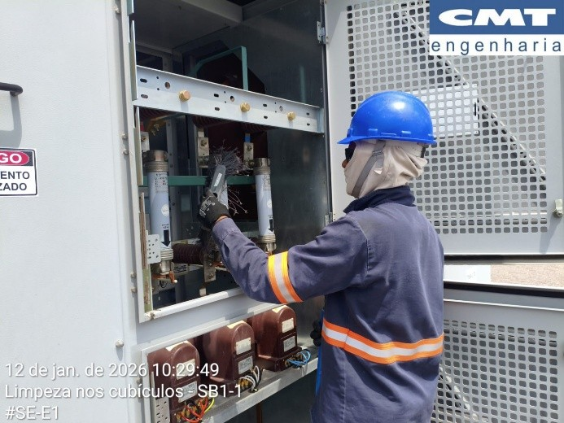

Atividades realizadas na Subestação E1
- Limpeza geral das buchas do transformador 6TR1;
- Limpeza geral dos cubículos de 6,9 kV;
- Retirada de resíduos de ninhos na estrutura do pátio de equipamentos.

descrição da imagem

descrição da imagem

descrição da imagem